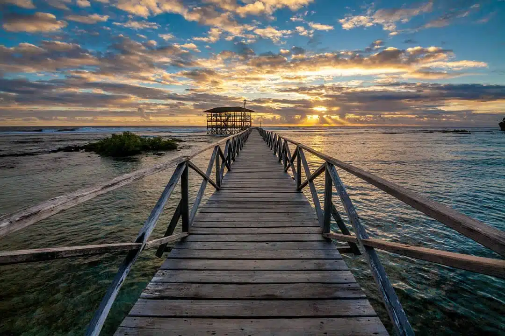
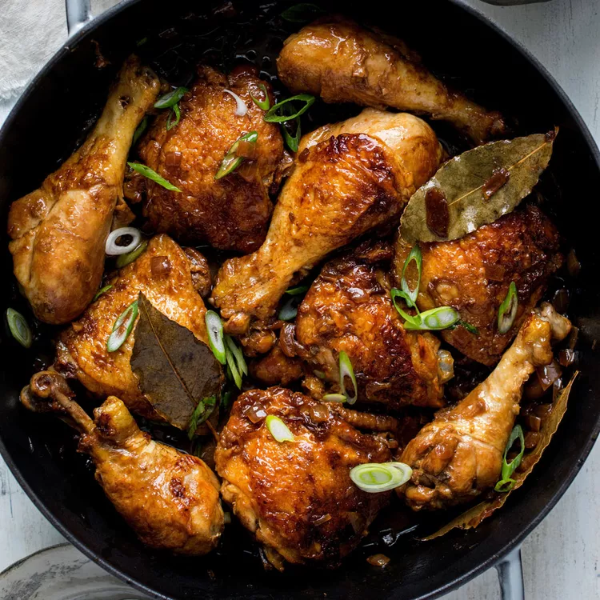

She's my favorite artist since i was Elementary, because i like her talent, beauty and her confidence, humility and the way she act.
This is my favorite place because, Siargao has a beautiful sunrise and also the beach was very nice, especially the Cloud 9, which is famous for its surfing waves. Beyond surfing, Siargao has a natural attractions such as white-sand beaches, crystal-clear lagoons, mangrove forests, and rock pools like Magpupungko. It's good for me, because i'm a nature lover, i want relaxing place and i want to adventure the whole Siargao. That's why Siargao is a perfect destination for me.

This is my favorite food Adobo. because, it's so delicious(sabaw palang, ulam na)
